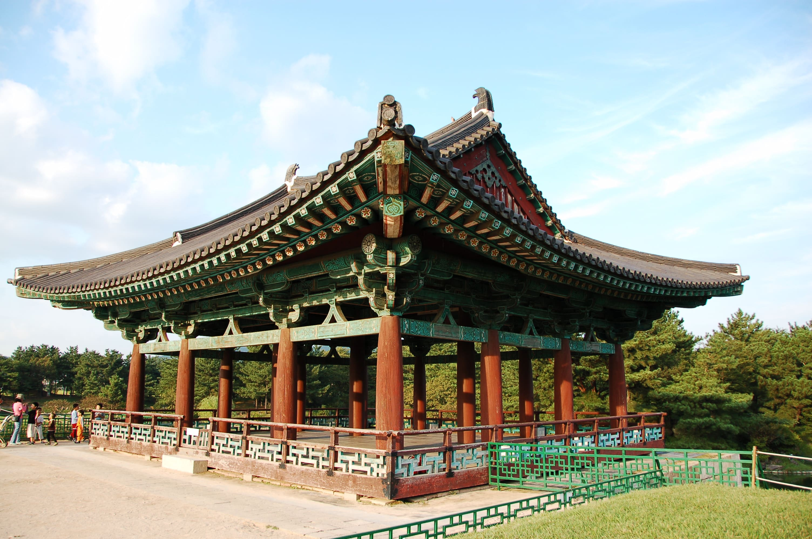

Lugares turísticos
de Corea del Sur
Seúl
Seúl es la ciudad más grande de Corea del Sur así como la capital de este país, por lo que se ha convertido en un destino importante en el este de Asia. Las atracciones de la ciudad son infinitas, pero muchos visitantes comienzan con algunos de los muchos palacios ubicados en Seúl. Comúnmente los recorridos turísticos incluyen Gyeongbok-gung y el Changdeok-gung que datan del siglo XV. También podrás disfrutar de antiguos templos y santuarios, hermosos parques públicos, diseño de vanguardia, centros comerciales y algunos de los mejores restaurantes de toda Asia.

Gyeongju
Gyeongju es una ciudad de más de 2,000 años y anteriormente fungió como capital de lo que alguna vez fue el Reino de Silla. Esta ciudad es un destino increíble que cuenta con varios templos y festivales culturales.Se recomienda comenzar el recorrido en el Templo Bulguksa, una verdadera obra maestra de la religión y el arte budista que data del siglo VIII.
Andong
Andong es conocida como la Ciudad Capital de la Cultura Espiritual Coreana. Quizás la atracción principal en la ciudad es la Aldea Folklórica de Andong Hahoe, donde se ha preservado el patrimonio cultural local. Los amantes de la buena comida disfrutarán aún más su visita a Andong pues esta ciudad cuenta con todo tipo de especialidades locales, como el famoso plato de pollo y fideos llamado jjimdak. Además podrás degustar el soju, una bebida destilada nativa.
Parque Nacional Seoraksan
Si quieres ir de excursión, entonces asegúrate de visitar el Parque Nacional de Seoraksan. En este parque encontrarás bosques de pinos, montañas escarpadas y rocosas, arroyos cristalinos y lagos impresionantes. El Parque Nacional de Seoraksan también alberga más de 2,000 especies de animales.
Jeonju
En el apogeo de la dinastía Joseon, Jeonju era su capital espiritual. Hoy, Jeonju está lleno de templos y museos, y es uno de los mejores lugares para visitar en Corea del Sur. Si quieres abrazar la cultura local y conocer su historia, dirígete a Jeonju Hanok Village. Allí, puedes ver casas tradicionales de principios del siglo XX, fabricar el papel Hanji tradicional o probar el famoso plato coreano Bibimbap, que originalmente proviene de esta región.